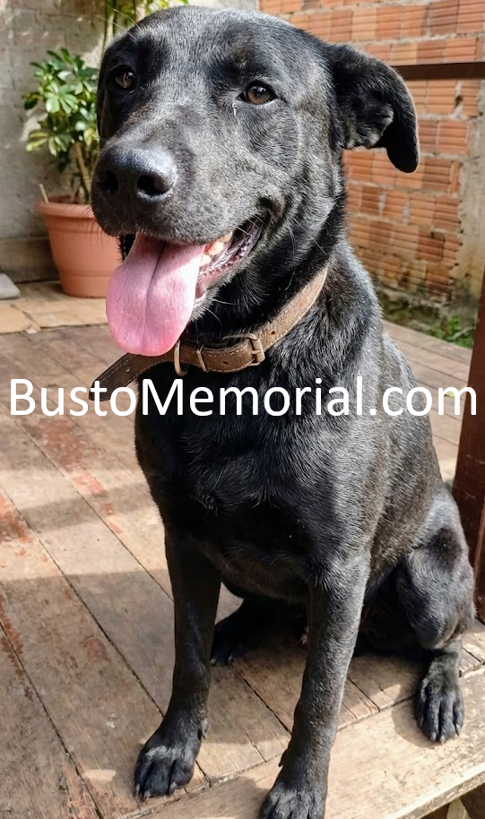
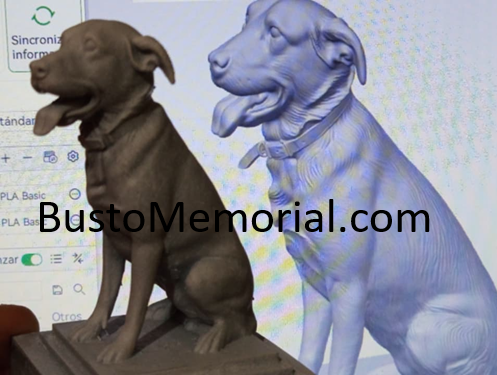

Sobre nuestro trabajo
Elaborado con resina de la más alta calidad,con respeto y dedicación, para honrar la memoria de nuestros seres queridos


Tambien podemos realizar esculturas de personas, figuras o cualquier cosa que te imagines
Cómo solicitar un busto
1.- Comparte con nosotros la foto de tu ser querido
2.-Te enviaremos un boceto para tu aprobación
Trabajamos con el 50% de anticipo , con 5 días hábiles para entrega
Nuestras figuras miden 8 x 8 x 14 Centrimetros
->Te podria interesar<-

Cotiza gratis en WhatsApp. envios en todo el país
Ignoramos propuestas de regateo
Ignoramos propuestas de regateo